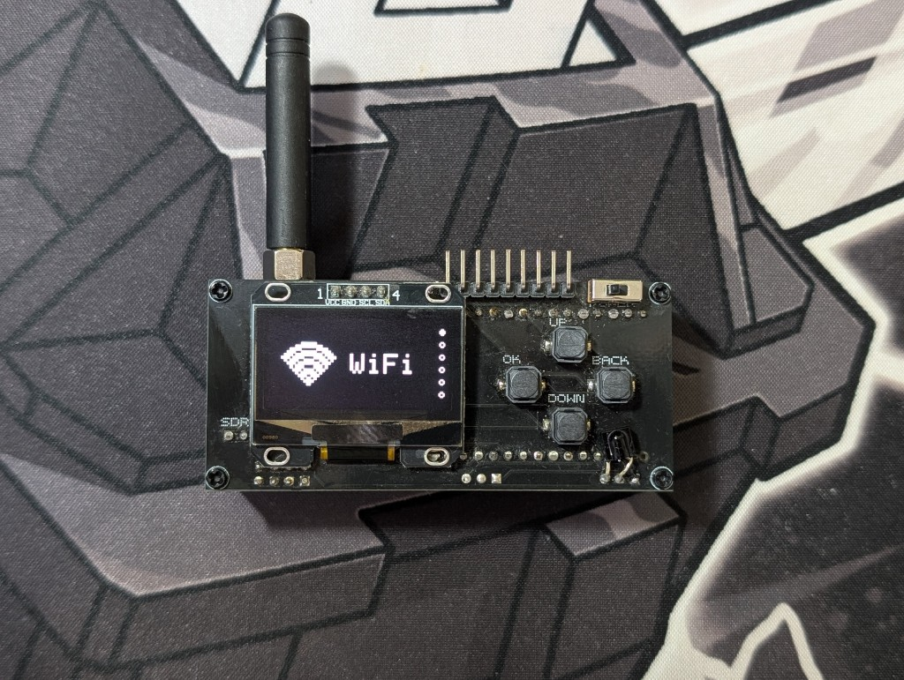

Добро пожаловать в вики ESP-HACK!
ESP-HACK — проект для ESP32, который позволяет заниматься пентестингом. У проекта своя прошивка и своё устройство.
В этой вики собраны инструкции по прошивке, модулям и подключению оборудования.

Последние изменения
Загрузка…